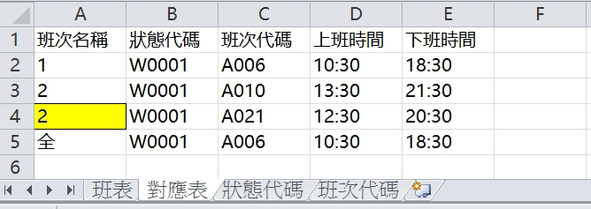

使用說明
- 下載「班表編排範本」，編輯班表。
- 在「轉換」的地方選擇剛才編輯的班表檔案並按下「轉換成班表匯入excel」，即會出現下載視窗。
- 下載並打開「班表匯入_xxxx.x月班表.xlsx」，確認有資料。
- 利用Apollo ERP排班系統的匯入功能上傳班表（注意尋找檔案時的檔案類型，預設是「CSV」要改成「全部檔案」）。
使用限制
目前只支援Chrome瀏覽器，其他的沒試過。
1. 班表編排範本
1.1 班表
- 標題格式一定要是年份.月份開頭。
- 工號欄位若留空，轉換時會跳過該行，注意工號以及班表等各資料的前後不要不小心多輸入空白。
- 工作表名稱可更改，但是順序一定要是在最左邊是班表，接著是對應表。
- 純粹供編輯對應表時參照使用，程式中目前沒有使用到。
- 左邊的「班次2」恰巧因為周六日會有藍色的背景顏色，程式會先看對應表是否有「班次2且藍色底」的設定，沒有的話就用班次2的設定。
- 日期會抓從「F2」欄位往右抓，請自行確保月份日期的正確。
1.2 對應表

- 在「班次名稱」欄位填入的值代表班表裡面的班次，同樣的值可設定背景顏色做區分。
- 全欄位皆需要有值，休假因有休息日與例假日之分，目前暫時不支援。